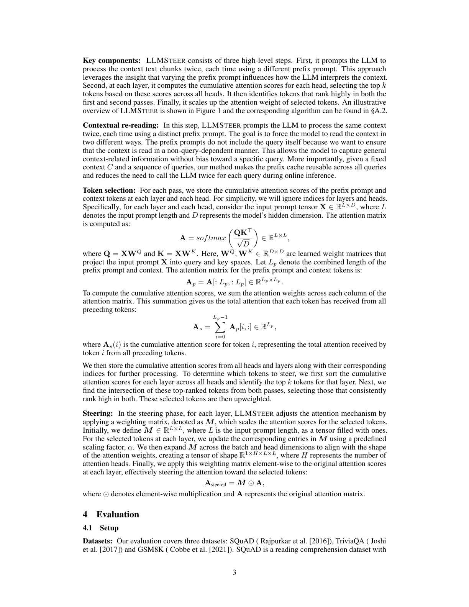
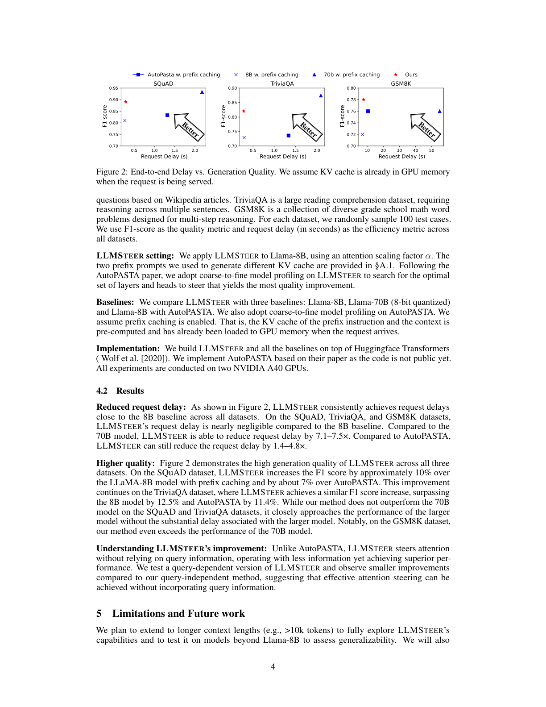

一种免微调、与前缀缓存兼容的注意力引导框架，用于提升长上下文 LLM 的理解质量与推理效率
随着大语言模型（LLM）在复杂任务上展现出令人印象深刻的性能，它们仍然受困于较长的上下文理解能力以及高昂的计算开销。为了在效率与质量之间取得平衡，我们提出 LLMS TEER，一个通过「与查询无关的注意力引导（query-independent attention steering）」来增强 LLM 的免微调框架。在主流 LLM 与数据集上的测试表明，LLMS TEER 将性能差距相对基线缩小了 65.9%，并且相比近期的注意力引导方法将运行时延迟最多降低 4.8×。
大语言模型（LLM）在问答、摘要与推理等复杂任务上已展现出卓越能力。为提升其可靠性，LLM 常被注入超出其固有训练数据的领域或用户专属知识。然而，纳入这些动辄数千 token 的补充上下文会带来两大挑战：(1) 模型常常难以理解长上下文（例如「lost-in-the-middle」问题）；(2) 处理长上下文会带来巨大的运行时开销。
由于同一段上下文文本的 Key-Value（KV）缓存常被多次复用，许多近期系统采用前缀缓存（prefix caching）：把频繁复用的上下文的 KV 缓存存储下来，使 LLM 无需反复对这些上下文做 prefill。但是，模型在 KV 对保持不变的情况下，仍会不断「丢失」上下文中的关键信息。那么，是否存在一种无需微调模型、同时获得高效率与高质量的方法？
我们提出 LLMS TEER，一个开创性的、免微调的框架，通过事后注意力引导（post-hoc attention steering）高效提升模型的生成质量。具体而言，LLMS TEER 重新加权注意力分数，将模型的注意力「引导」向被选中的 token，从而改善其上下文理解。我们的核心洞察是：存储并复用 KV 缓存，提供了一个离线修改 KV 缓存以增进模型对上下文理解的机会；由于对前文上下文的 KV 缓存修改与查询无关，所有查询都能由此受益。LLMS TEER 使 LLM 能够用不同方式「重读」同一段上下文——其依据是：用不同前缀提示（prefix prompt）多次阅读同一上下文，会引导模型生成不同的 KV 缓存，代表对上下文的不同理解。
我们在 LLaMA-3.1-8b-Instruct 上实现了 LLMS TEER，并与 LLaMA-3.1-8b-Instruct、LLaMA-3.1-70b-Instruct 以及当前最优的注意力引导基线进行了对比。实验表明，通过引导那些在模型多种理解中始终重要的 token，LLMS TEER 不仅显著提升了 F1 分数（如 72.9 → 82.0），而且相比基线最高快 4.8×。LLMS TEER 既降低了运行时开销，又提升了生成质量。本文是首个 (1) 在不微调的前提下提升模型生成质量，且 (2) 该方式与前缀缓存相兼容的工作。
注意力引导并非凭空而来。诸如 PASTA 与 AutoPASTA 的方法，通过把 LLM 的注意力引导到输入文本的指定部分来提升生成质量。在 PASTA 中，用户手动指定输入中的 token，并通过重新加权把 LLM 的注意力导向这些高亮 token。然而，由人工标注相关输入片段并不总是可行，尤其对于超长上下文与上下文相关的任务。
AutoPASTA 通过自动迭代提示来识别关键上下文信息，从而增强了 PASTA：它直接提示 LLM 基于查询生成上下文中的关键句，再对这些关键句里的 token 注意力分数进行上加权。尽管在提升生成质量上有潜力，AutoPASTA 仍存在若干局限：
我们介绍 LLMS TEER 的设计，它在降低运行时开销的同时提升推理质量。先给出基本洞察，再说明如何选取并引导 token。
基本洞察：当 LLM 单次处理一段上下文时，某些 token 可能未获得足够注意力。通过提示 LLM 以不同前缀提示、从而不同 KV 缓存多次阅读上下文，我们假设：在这些 KV 缓存中注意力分数始终很高的 token，正是需要更多注意力的 token。

关键组件：LLMS TEER 由三个高层步骤组成。第一，提示 LLM 用两个不同的前缀提示把上下文文本块处理两次，利用「前缀提示的变化会影响 LLM 对上下文的解读」这一洞察。第二，在每一层对每个注意力头的累积注意力分数进行计算，基于跨所有头的分数选出 top-k token，并找出两次处理中都排名靠前的 token。最后，放大所选 token 的注意力权重。图 1 给出示意，对应算法见 §A.2。
上下文重读（Contextual re-reading）：此步骤提示 LLM 用不同前缀提示把同一上下文处理两次，迫使模型以两种不同方式阅读上下文。前缀提示不含查询本身，以确保上下文以「非查询相关」的方式被阅读，从而捕获与具体查询无关的通用上下文信息。更重要的是，给定固定上下文 C 与一串查询，该方法使前缀缓存可在所有查询间复用，并减少了在线推理时为每个查询调用两次 LLM 的需要。
Token 选择：对每次处理，我们存储每层每头的前缀提示与上下文 token 的累积注意力分数。设输入提示张量 $X\in\mathbb{R}^{L\times D}$，其中 $L$ 为输入提示长度、$D$ 为模型隐维度。注意力矩阵计算为 $A=\mathrm{softmax}\!\left(\frac{QK^\top}{\sqrt{D}}\right)\in\mathbb{R}^{L\times L}$，其中 $Q=XW_Q$、$K=XW_K$。令 $L_p$ 为前缀提示与上下文的合并长度，则对应的注意力子矩阵为 $A_p=A[:L_p,:L_p]\in\mathbb{R}^{L_p\times L_p}$。对每列求和得到每个 token 收到的累积注意力：
其中 $A_s(i)$ 为 token $i$ 的累积注意力分数，表示其从所有前序 token 收到的总注意力。随后我们在所有头与层上存储累积分数及对应索引；对每个层跨所有头排序，选出该层的 top-k token，再取两次处理的交集，对其中始终排名靠前的 token 进行上加权。
引导（Steering）：在引导阶段，每层通过一个加权矩阵 $M$ 调整注意力机制，$M$ 对所选 token 的注意力分数进行缩放。初始定义 $M\in\mathbb{R}^{L\times L}$ 为全 1 张量；对每层所选 token，用预定义缩放因子 $\alpha$ 更新 $M$ 的对应项，再沿 batch 与头维度扩展为形状 $\mathbb{R}^{1\times H\times L\times L}$，最后逐元素乘到每层的原始注意力分数上：
其中 $\odot$ 表示逐元素乘法，$A$ 为原始注意力矩阵。
数据集：评估覆盖 SQuAD（基于维基百科文章的阅读理解）、TriviaQA（需跨多句推理的大型阅读理解数据集）、GSM8K（小学多步数学应用题）。每个数据集随机采样 100 个测试用例，以 F1 分数作为质量指标、以请求延迟（秒）作为效率指标。
LLMS TEER 设置：将 LLMS TEER 应用于 Llama-8B，使用注意力缩放因子 $\alpha$；生成不同 KV 缓存的两个前缀提示见 §A.1。沿用 AutoPASTA 的「由粗到细（coarse-to-fine）」模型剖析来搜索最优的待引导层与头。
基线：对比 Llama-8B、Llama-70B（8-bit 量化）以及带 AutoPASTA 的 Llama-8B，均启用前缀缓存。实现基于 Huggingface Transformers，所有实验在两张 NVIDIA A40 GPU 上进行。

降低请求延迟：如图 2 所示，LLMS TEER 在所有数据集上的请求延迟都接近 8B 基线；相比 70B 模型可降低 7.1–7.5× 延迟，相比 AutoPASTA 仍可降低 1.4–4.8×。
更高质量：LLMS TEER 在三个数据集上均展现高生成质量。在 SQuAD 上，其 F1 比启用前缀缓存的 LLaMA-8B 高约 10%、比 AutoPASTA 高约 7%；在 TriviaQA 上超过 8B 模型 12.5%、超过 AutoPASTA 11.4%；在 GSM8K 上甚至超过 70B 模型。虽然与 70B 在 SQuAD/TriviaQA 上仍有差距，但已非常接近且无需承担大模型的高延迟。
对改进来源的理解：与 AutoPASTA 不同，LLMS TEER 不依赖查询信息就能引导注意力，以更少信息取得更优表现。我们测试了「查询相关」版本的 LLMS TEER，其改进小于「查询无关」方法，说明有效的注意力引导可以无需纳入查询信息。
我们计划将方法扩展到更长上下文（如 >10k token）以充分挖掘能力，并在 Llama-8B 之外的模型上测试以评估泛化性；还将开展消融实验，量化「引导机制」与「上下文重读」各自的贡献。我们将探索与传统微调相比本方法的局限与能力（尤其考虑上下文窗口长度与模型推理能力）；此外，PagedAttention 与 FlashAttention 可进一步提升效率；在「单 token 对」粒度上做更细粒度引导（超越当前的 token 级上加权）也有望进一步提升生成质量，留作未来工作。
我们提出 LLMS TEER，一种新颖的注意力引导方法，通过让模型多次「重读」上下文来提升 LLM 的生成质量。具体而言，LLMS TEER 将小模型与大模型之间的响应质量差距缩小了 65.9%，并且相比当前最优的注意力引导基线把响应速度提升了 4.8×。